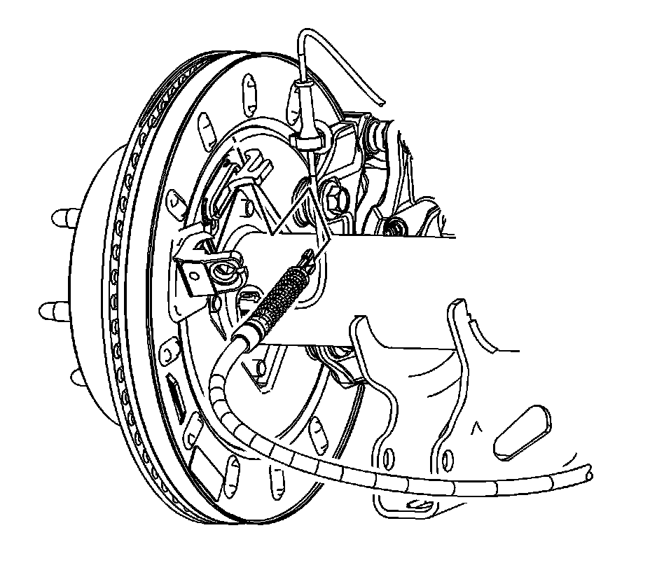

Parking Brake Actuator Replacement (1500 Series)
Parking Brake Actuator Replacement (1500 Series)
Removal Procedure
Caution: Refer to Brake Dust Caution.
1. Release the park brake.
2. Disable the park brake cable automatic adjuster. Refer to Parking Brake Cable Adjuster Disabling.

3. Disconnect the park brake cable from the park brake actuator lever.
4. Remove the park brake shoe.
5. Remove the park brake actuator adjuster wheel, pin and lever from the backing plate.
Installation Procedure
1. Install the park brake actuator lever, pin and adjuster wheel to the backing plate.
2. Install the park brake shoe.
3. Adjust the park brake shoe. Refer to Park Brake Adjustment.
4. Install the rear park brake cable to the park brake actuator lever.
5. Install the park brake cable to the mounting bracket until the locking tabs snap into place.
6. Enable the park brake cable automatic adjuster. Refer to Parking Brake Cable Adjuster Enabling.
7. Apply and release the park brake lever 3 times.